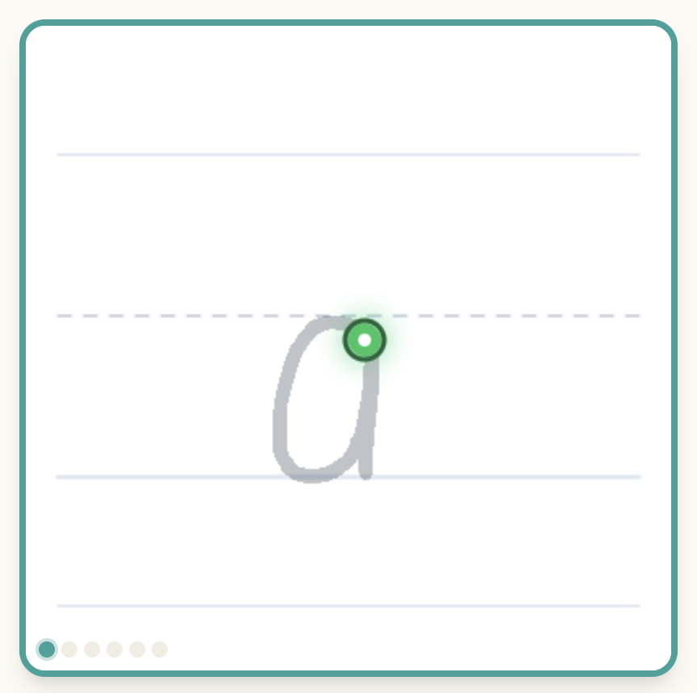

01
Model
Before a student writes a new letter, LetterBuddy plays a short, clear video showing how it is formed.
LetterBuddy helps students build confident letter-formation habits through clear modeling, guided practice, and a little bit of encouragement.

Let’s write lowercase a!
Follow the path with your finger or stylus.A gentle progression gives students the support they need, then lets them show what they can do.
Before a student writes a new letter, LetterBuddy plays a short, clear video showing how it is formed.
A faint tracing guide creates a visual track to follow. If a student wanders too far, they get a gentle prompt to try again.
After tracing twice, the guide disappears, so students can practice on their own. Need it again? Turn it back on anytime.
The Parent & Educator Dashboard keeps the adult in the loop, making it easy to get students started and follow their letter-formation progress over time.
When forming letters becomes more automatic, students can put more energy into expressing what they want to say.
This space is ready for your story, the spark that led you to build LetterBuddy, and the experience you bring to young writers.
This space is ready for research, resources, and learning principles that inform LetterBuddy’s approach to letter formation.
LetterBuddy is designed to be encouraging and simple for young students.
Your feedback matters. Use the 🚩 Report grading error option inside LetterBuddy to tell us what happened.
Open LetterBuddy to share feedback ↗Thank you for being part of LetterBuddy’s journey. Your feedback is helping us build a more confident start for every little writer.
Try LetterBuddy ↗